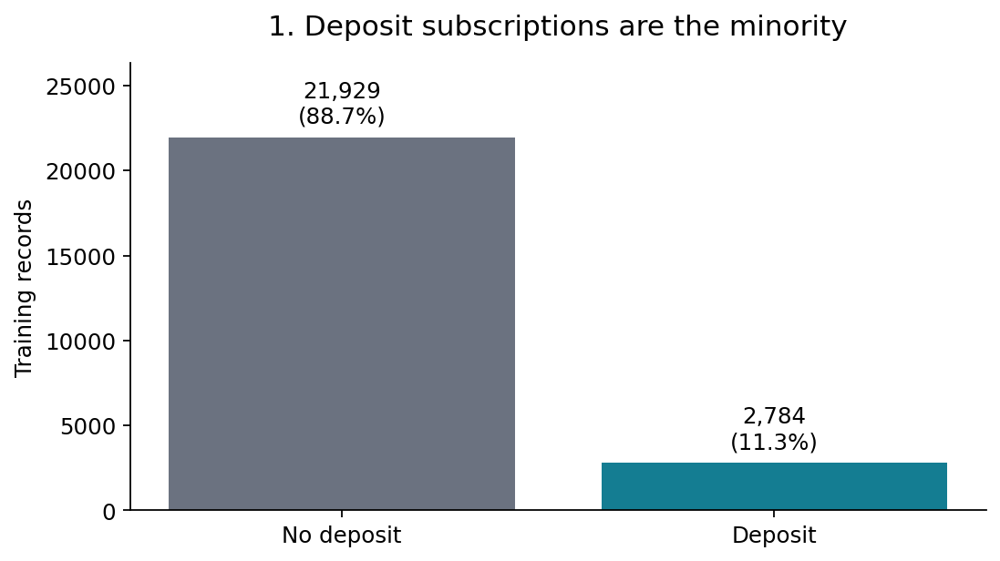
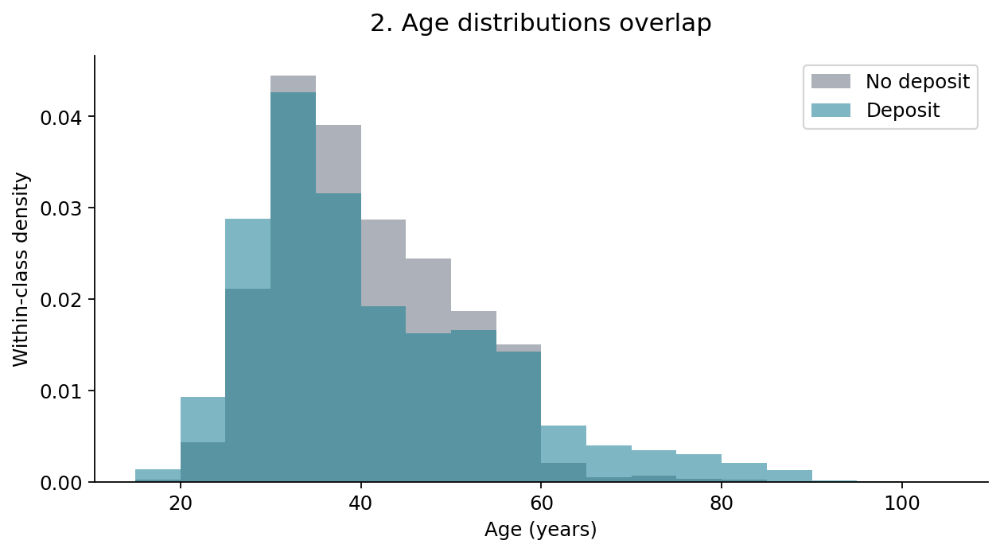
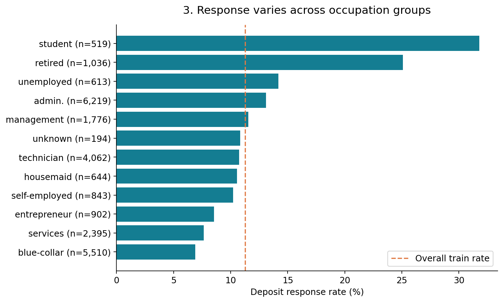
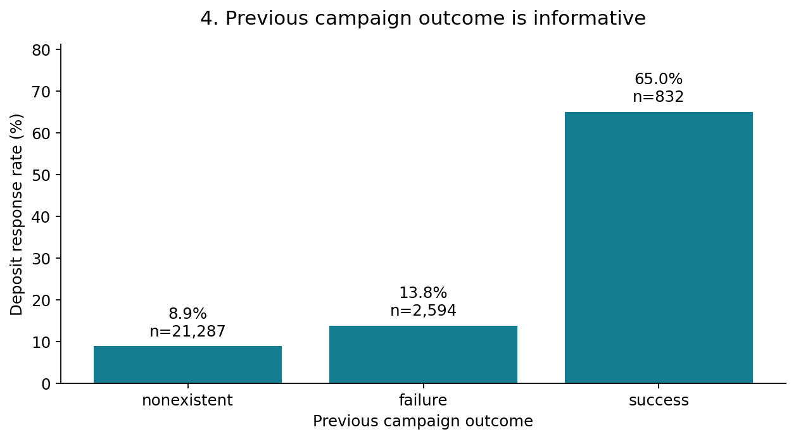
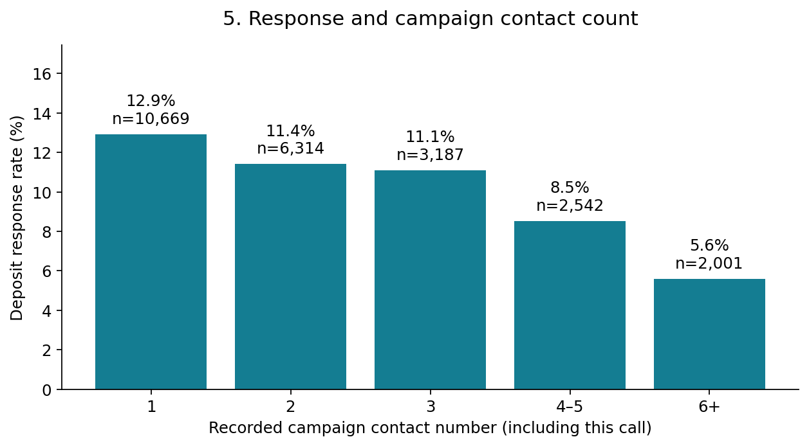
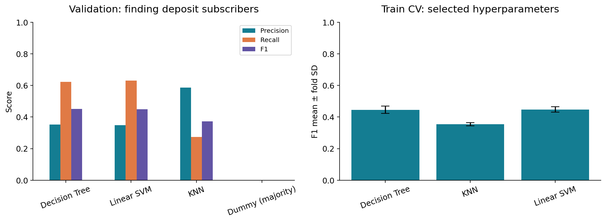
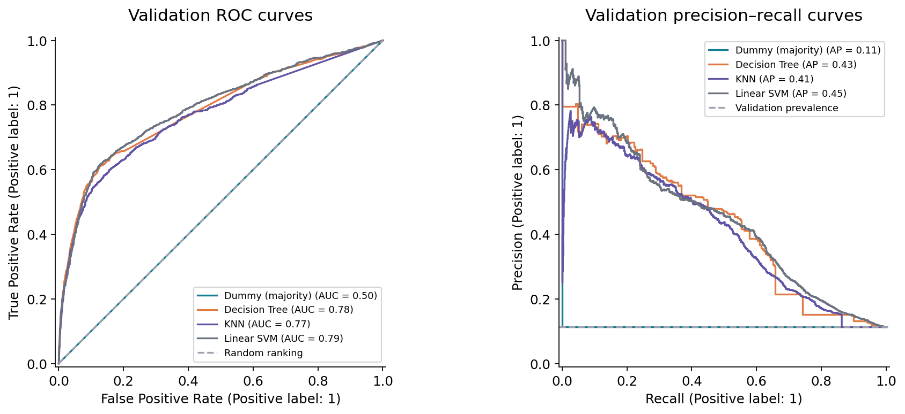
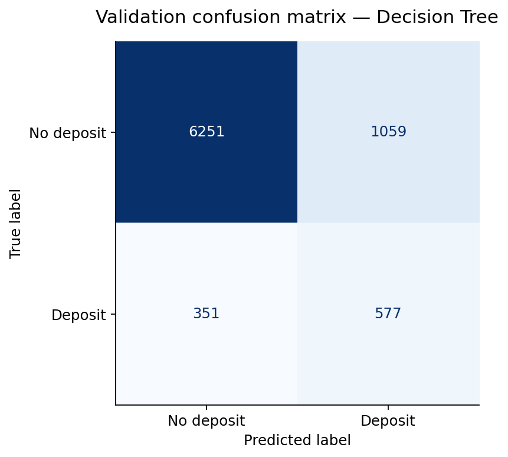
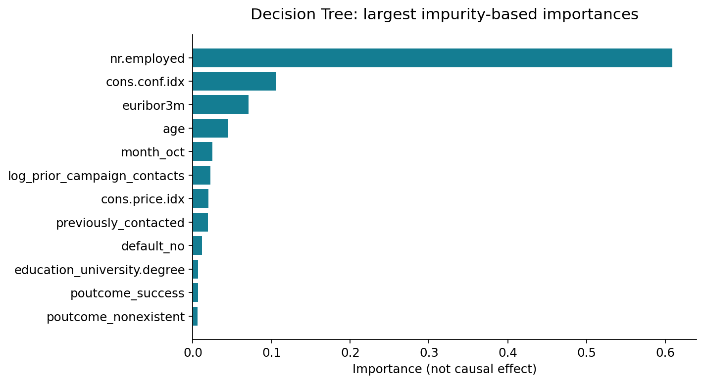

Bank Marketing Response
Nurlan Ramazan · Araizhan Tazhimova
Predicting term-deposit subscriptions using attributes available before a scheduled call.
What was done
Five interpreted EDA plots; documented quality checks; duration excluded; domain transformations, one-hot encoding and scaling in fold-local pipelines; majority baseline plus Decision Tree, KNN and Linear SVM; five-fold grouped CV; limited hyperparameter tuning; validation errors and a final-stage plan.
Partition sizes: train 24,713, validation 8,238, reserved test 8,237. Identical predictor profiles stay together. Client-level independence cannot be verified without client IDs. This random split does not model future campaign performance.
Measured validation results
| Model | Accuracy | Precision (yes) | Recall (yes) | F1 (yes) | ROC-AUC | AP |
|---|---|---|---|---|---|---|
| Decision Tree | 0.8288 | 0.3527 | 0.6218 | 0.4501 | 0.7837 | 0.4337 |
| Linear SVM | 0.8252 | 0.3478 | 0.6304 | 0.4483 | 0.7908 | 0.4487 |
| KNN | 0.8963 | 0.5853 | 0.2737 | 0.3730 | 0.7695 | 0.4140 |
| Dummy (majority) | 0.8874 | 0.0000 | 0.0000 | 0.0000 | 0.5000 | 0.1126 |
The tree leads by about 0.002 F1 over Linear SVM; no meaningful superiority is established. SVM has higher ROC-AUC and AP. The majority baseline has 88.7% accuracy but finds no positives.
Training cross-validation
| Model | Mean CV F1 | Fold SD | Candidates | Folds |
|---|---|---|---|---|
| Decision Tree | 0.4456 | 0.0227 | 12 | 5 |
| KNN | 0.3537 | 0.0100 | 6 | 5 |
| Linear SVM | 0.4479 | 0.0167 | 6 | 5 |
Selected hyperparameter CV scores have tuning optimism. Fold SD is not a confidence interval. Validation selects the final candidate; no test scoring was performed.
Evidence and interpretation









Reproduce and continue
See README, full executed notebook report, Russian instructions and rubric mapping. Next: temporal checks, feature-availability audit, nonlinear SVM, cost-aware thresholding and a frozen final-test evaluation.